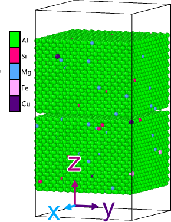
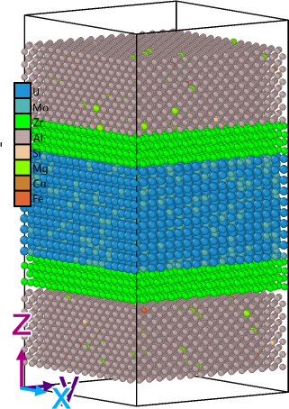

UMo-Al Fuel/Cladding: Figures & MD Snapshots
1. AA6061 Cladding Atomistic Model

Multicomponent AA6061 model containing the Al matrix with alloying species used to represent the cladding-side material for thermal relaxation, interface construction, diffusion, and mechanical-response studies.
2. UMo-Zr-AA6061 Layered Interface Model

Layered atomistic model combining U-Mo fuel, a Zr diffusion-barrier region, and AA6061 cladding. This geometry provides the basis for studying interface structure, diffusion, bonding, residual-stress evolution, and delamination mechanisms after suitable potential validation.
Published Fuel-System Context
The following literature figures are included only to connect the atomistic models to the real monolithic-fuel architecture and experimentally observed interface phenomena.
3. Monolithic Fuel Plate Architecture After HIP
p. 246-254..png)
Literature context: schematic of the HIP-bonded monolithic fuel plate architecture from Mehta et al., Journal of Phase Equilibria and Diffusion, 2018, 39(2), 246-254. This provides the component-scale context for the U-Mo, Zr-barrier, and AA6061 atomistic models.
4. Fission-Fragment / Fuel-Matrix Interaction Context
.png)
Literature context: published illustration of fission-fragment release and interaction-layer behavior associated with U-Mo fuel systems, from Jeong et al., Journal of Nuclear Materials (2015). It motivates future extensions toward irradiation-driven transport and post-irradiation interface behavior.
Model-construction images are distinguished from validated quantitative results. Diffusion coefficients, interface stresses, bond strengths, and delamination metrics will only be reported after the corresponding interatomic-potential and property-validation steps are completed.